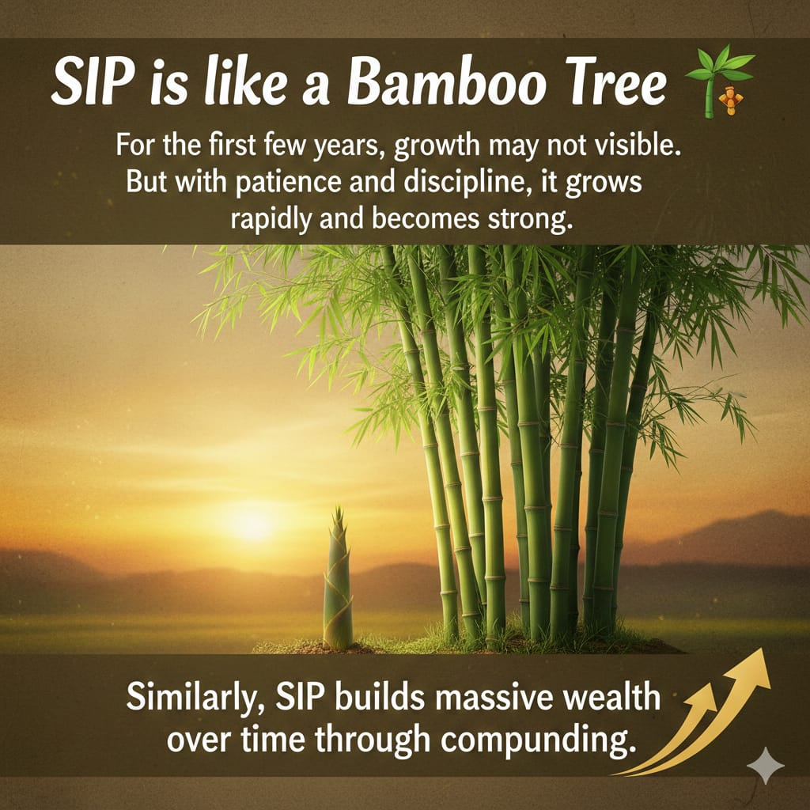

Disciplined Investing
Invest a fixed amount every month. It builds a strong saving habit.
Smart Mutual Fund Planning
What is a mutual fund?
A mutual fund collects money from many investors and invests it across assets like stocks and bonds through professional fund managers.
What is SIP?
A Systematic Investment Plan (SIP) helps you invest a fixed amount every month, making long-term wealth creation simple and disciplined.
Trusted Guidance
ANIL WAGHUNDE
Mutual Fund Distributor
AMFI Registered MFD ARN 342560
Associated with NJ Wealth
SIP is simple, flexible, and useful for long-term goals.
Invest a fixed amount every month. It builds a strong saving habit.
Your money can grow on both investment and returns over time.
You can start with a small amount and increase it later.
Small, regular investments can potentially become substantial over long periods.
If you invest ₹5,000 monthly for 12 years at an assumed 12% annual return, the estimated future value can be around ₹16,11,261.

Check how your monthly contribution can grow over time.
Calculate Your SIP